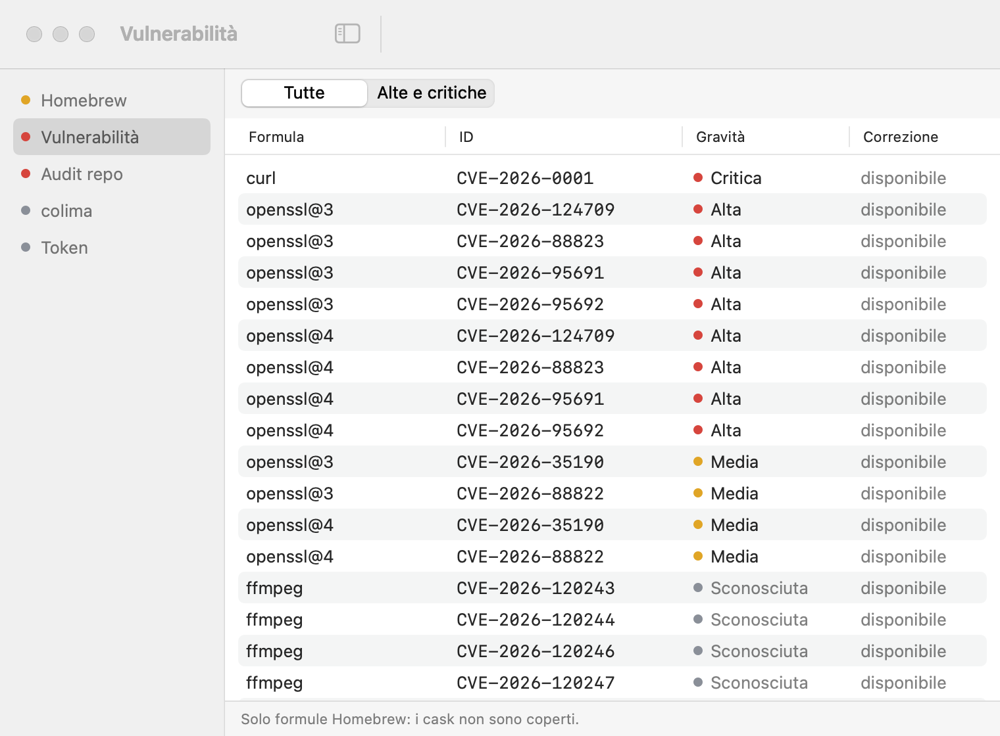

Un clic per attivarla
Da "AI setup, statusline" nell'app: devbar mostra il piano, scrive in settings.json e tiene un backup annullabile.
macOS 14+Swift 6Open sourceNessuna telemetria
devbar vive nella barra dei menu e tiene d'occhio Homebrew, vulnerabilità, colima e strumenti AI. L'icona cambia colore quando c'è qualcosa da sistemare; un clic apre il pannello, senza aprire il terminale.
Gratis, senza account. Un'unica app firmata ad-hoc: l'installer pensa alla quarantena di macOS.
Ogni controllo è un comando locale che puoi rilanciare quando vuoi. Il colore dell'icona è il peggiore tra tutti.
Quanti pacchetti sono da aggiornare, con un pulsante per aggiornarli. Cork resta a portata di mano.
Aggiornabrew vulns e npm audit / composer audit sui repo che scegli tu, una volta al giorno.
Stato, CPU, RAM e container, con avvia e ferma.
Avvia o fermaRTK, tokensave e l'uso di Claude Code in un colpo d'occhio, con i minuti che restano alla prompt cache.
StatuslineInstalla e aggiorna RTK, caveman, tokensave e la statusline su tutti gli harness che trovi: Claude Code, OpenCode, Copilot. Configura un progetto in un clic.
Configura progettoQuando serve il dettaglio si apre una finestra con tabelle ordinabili: vulnerabilità per gravità, pacchetti per versione, container per consumo.

devbar porta una statusline per Claude Code che mostra i minuti che restano prima che la prompt cache scada. Così sai se il prossimo messaggio riparte dalla cache o ricomincia da zero.
Da "AI setup, statusline" nell'app: devbar mostra il piano, scrive in settings.json e tiene un backup annullabile.
Il comando punta dentro l'app installata, quindi non si rompe quando aggiorni devbar.
Il punto di partenza è la statusline di Sparkdock. devbar l'ha estesa, tra l'altro con i minuti alla scadenza della cache.
Installare e configurare strumenti significa toccare file che non sono di devbar. Per questo ogni passo è esplicito e reversibile.
Ogni azione che scrive o installa mostra il piano e chiede il via.
Ogni modifica è registrata con un backup. devbar undo la riporta com'era, senza sovrascrivere ciò che nel frattempo ha cambiato un altro programma.
Nessuna telemetria e nessun account: i controlli sono comandi locali e i dati restano sul tuo Mac.
Per aggiornare ripeti gli stessi passi con lo zip nuovo.
Prendi l'ultima release dagli asset su GitHub: devbar-x.y.z.zip.
Apri il terminale nella cartella dello zip.
unzip devbar-*.zip -d devbar
cd devbarCopia l'app e toglie la quarantena di macOS.
./install.shLicenza GPLv3. Il codice è su GitHub: le PR sono benvenute, le idee anche. Come contribuire.
devbar è gratis, open source e senza pubblicità: lo sviluppo nel tempo libero. Se ti piace, un brindisi aiuta.